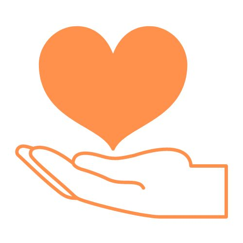
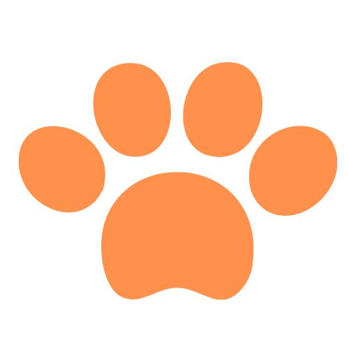

Adoptálj még ma!
Rafiki
A méltóságteljes Rafiki keresi a nyugodtabb cicára vágyó leendő gazdáját!
Günter
Günter egy játékos macska, így mellette lehetetlen az unatkozás!
Igor
Igor a tekintetével a gonoszt is kiűzi a lelkedből! Démonűző gazdáját keresi.
Gaia
Gaia nehéz időszakon ment keresztül, ezért szeretetteljes és befogadó környezetre vágyik.
Így tudsz te is segíteni rajtuk!
Önkéntesség
A cicák gondozásához önkéntesekre is szükségünk van, ezért ha szeretsz szabadidődben állatokkal foglalkozni nálunk megtalálod a helyed!
Támogatás
Segítsd macskamentő munkánkat, és támogasd a cicákat akár adód 1%-val is, hogy boldogabbak legyenek!
Örökbefogadás
Fogadj örökbe egy cicát, és éljetek együtt boldogan! Hisz mind tudjuk, egy cicának egy szerető otthonra van szüksége!
3500
Örömteli
nyávogás
120
Boldog
önkéntes
320
Otthont kereső
Aranyos Macska
12
Telephely
országszerte
57
Megmentett
Macskaféle
Macskáink gondolatai
Kedvenceim közé tartoznak a gombócok és a simogatások... de azért aludni is szeretek.
- Po
Szerettem röpködni ameddig tudtam, de már csak egy kis ártatlan cica lettem, aki egy szerető és játékos gazdát keres.
- Fogatlan
Mew mew mew mew? MeOeOeOw!!!! Meow... Meow 😭
- Karcsi
Egy icike-picike cicuska vagyok, aki remélhetőleg egy szerető otthonban fog felnőni rengeteg gyerek között.
- Junior